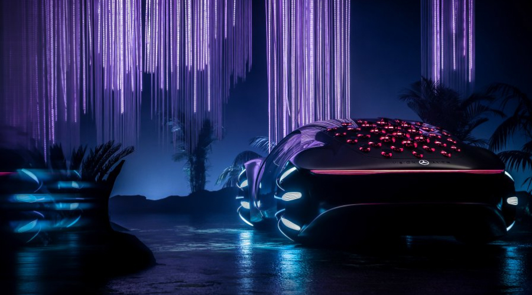
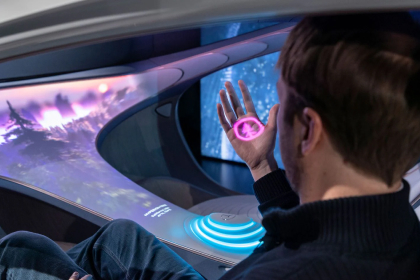
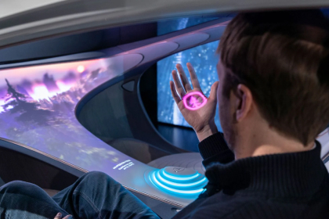

The VISION AVTR
Inspered by the future
Inspered by the future
Електромобільність в гармонії з людиною і природою. Екологічна технологія органічних акумуляторів і продумана операційна стратегія концепт-кара VISION AVTR.
На виставці CES 2020 був представлений новий концептуальний Mercedes-Benz – VISION AVTR. Футуристична концепція представленого електромобіля об'єднує людину, природу і автомобіль унікальним чином.
Ола Калленіус, голова правління Daimler AG і Mercedes-Benz AG, у своєму виступі представив концепт-кар разом з лауреатом премії Оскар і творцем фільму Аватар Джеймсом Кемероном.
Саме філософія, створена культовим режисером у фантастичному фільмі, стала основою створення VISION AVTR.


«Mercedes-Benz завжди був одним із самих технологічних преміальних брендів. Тепер прийшло час об'єднати розкіш і екологічність. Ведь тільки так ми зможемо відповідати стандартам майбутнього».
Дизайн VISION AVTR – воплощення екологічності
Новаторська концепція VISION AVTR поєднує в собі екологічну взаємодію дизайну інтер'єру, екстер'єру та UX. Весь процес проектування був орієнтований на конкретний результат – неповторний досвід взаємодії та створення концепт-кара водієм і пасажирами. Речь шла про створення унікального простору, в якому пасажири мають біометричний зв'язок з іншим, з транспортним засобом і оточуючим миром.
Боковое внешнее отверстие проходит через внутрішню частину і створює бесконечную петлю, прототипом якої стала священна зв'язок між народом На'ви у фільмі Аватар і їх природною середою життя.
Крім того, завдяки подовженому дизайну «One Bow» і органічній філософії дизайну, VISION AVTR демонструє радикально новий етап автомобілебудування. Таким чином, пройшовши шлях від концепції осознанности до унікального злиття людини і автомобіля, інженерам Mercedes-Benz вдалося створити концептуальний електромобіль VISION AVTR.

Коротким продовженням зовнішнього мінімалістичного дизайну є передні сидіння, виконані в дуже органічній формі, що нагадує листяні гамаки з планети Пандора. Центральна консоль символізує Древо Душ, найсвященніше місце На'ві. Блок управління – інтуїтивно зрозумілим та неймовірно функціональним.


 

Крім того, центр управління розташовується таким чином, що легко доступний як для водія, так і для пасажира, а також і для пасажирів ззаду.
Таким чином, VISION AVTR встановлює тісний біометричний зв'язок з водієм та допомагає підвищити поінформованість про навколишню ситуацію.
Задня частина сидінь та внутрішнє оздоблення даху, виконані із спеціальної тканини, яка змінює колір. Залежно від освітлення, текстиль може бути темно-синього або ніжного світло-синього кольору.
Крім цього, екологічність салонного електромобіля підвищена за допомогою вегетаріанської шкіри DINAMICA® – першої та єдиної мікрофібри, яка забезпечує екологічну ефективність протягом усього виробничого циклу.
DINAMICA® є переробленим матеріалом зі старого одягу, тканин та пластикових пляшок з ПЕТФ.